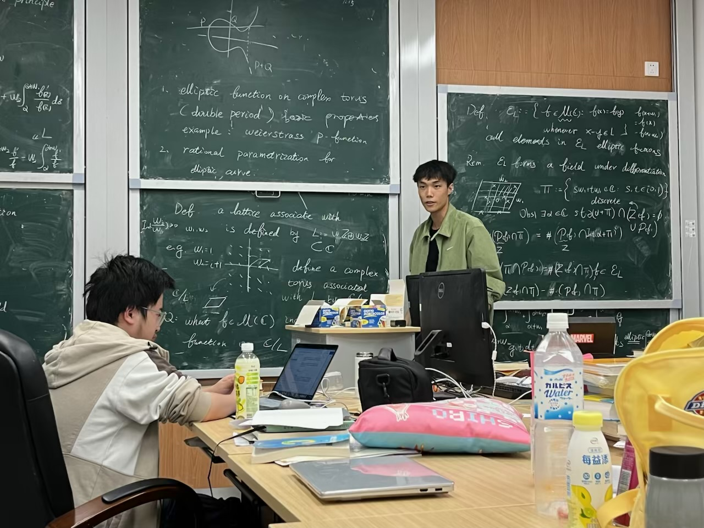

Abstract
Overall, this is a talk intended for a general audience. The only prerequisites are a basic knowledge of complex analysis, for instance, understanding Liouville's theorem and the residue theorem. Anyone intrigued is welcome!


M.Sc. student in Mathematics
University of Bonn
Bonn, Germany
s79jxi@uni-bonn.deOverall, this is a talk intended for a general audience. The only prerequisites are a basic knowledge of complex analysis, for instance, understanding Liouville's theorem and the residue theorem. Anyone intrigued is welcome!
